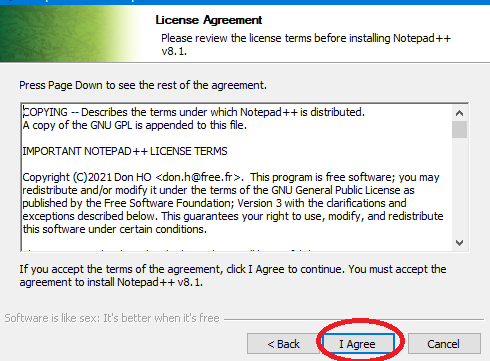
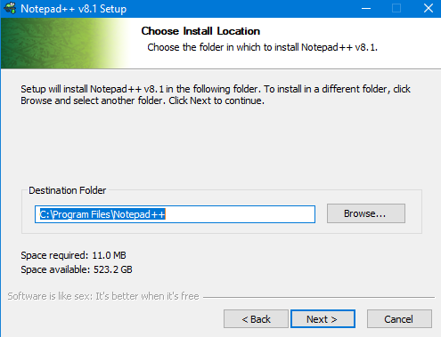
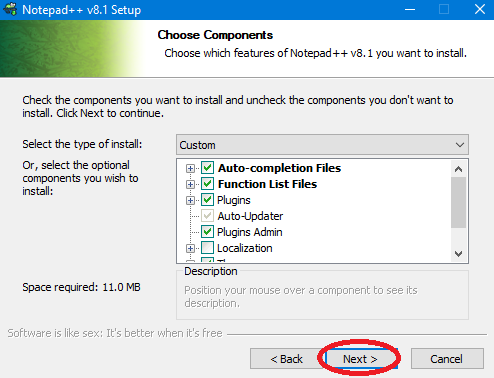
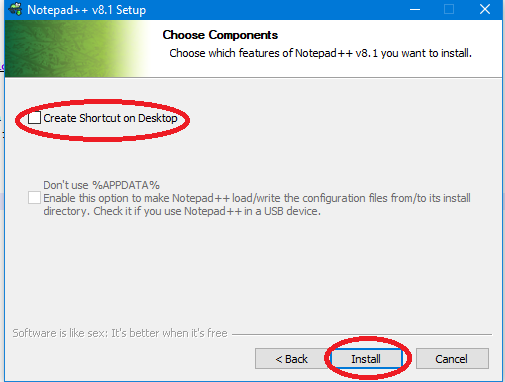
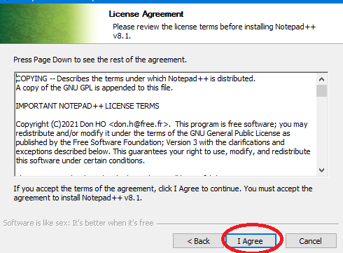
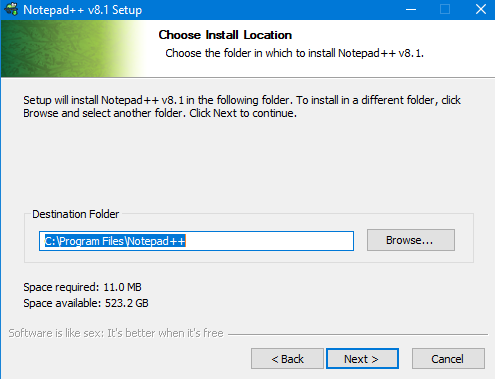
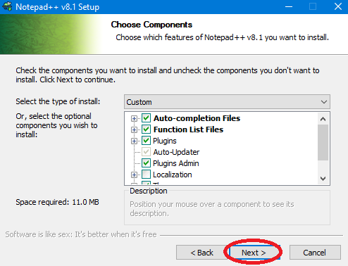
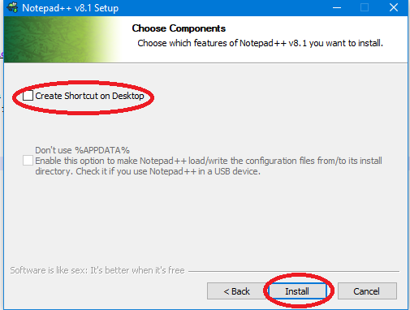

HTML Programando!
Lo que necesitas:
Una computadora o mac
Notepad++
(en mac hay alternativas)
espacio en tu disco duro
Nota: Recomiendo navegadores de internet modernos.
Mostrare en imagenes porque si pongo codigo en la pagina arruinaria todo.
Si alguien dice que es un virus NO LE CREAS.
descarga notepad++
Instalalo
Aqui estan los pasos
Corre el instalador

 



Espera
Presiona el boton "finish"
Corre notepad ++




Espera
Presiona el boton "finish"
Corre notepad ++
Haciendo tu primer hello world!
Esta pagina esta hecha en html.
NOTA:No puedo escribir commandos porque arrunaria la pagina, usare imagenes
crea una carpeta en tu escritorio y llamala "Proyectos" en esa carpeta has otra carpeta y ponle el nombre que quieras
crea un archivo de texto, cambia el nombre y ponle "index.html" si a windows no le gusta eso, presiona aceptar
Has click derecho y clickea Edit with notepad++
hice un ejemplo! aqui esta , contiene un poco de codigo que te puede servir
La siguiente seccion va a mostrarles como incluir su codigo y tambien hacer cosas personalizadas para que paresca mucho al mio
ES TODO POR AHORA
|